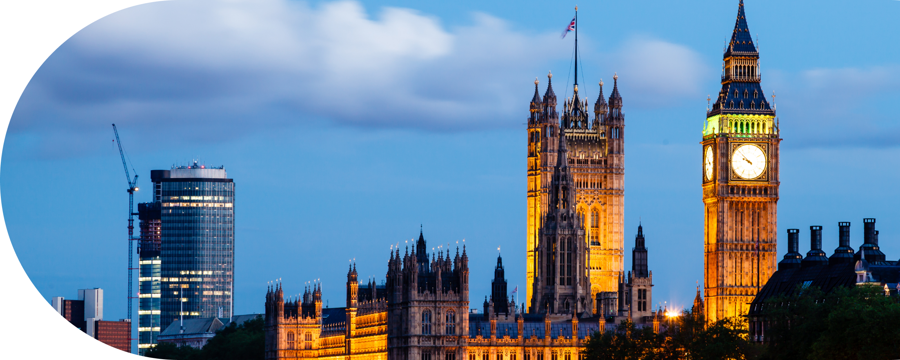
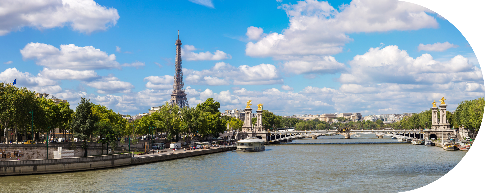
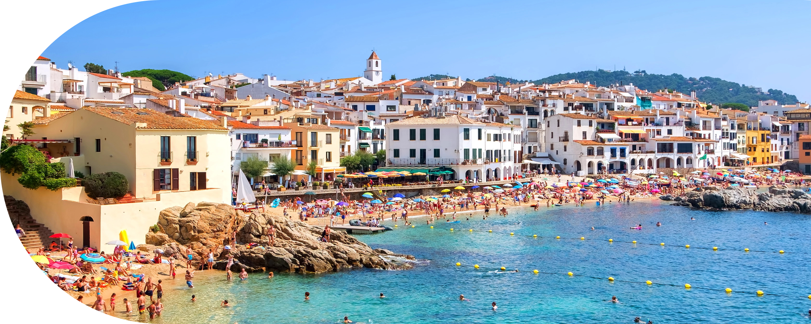
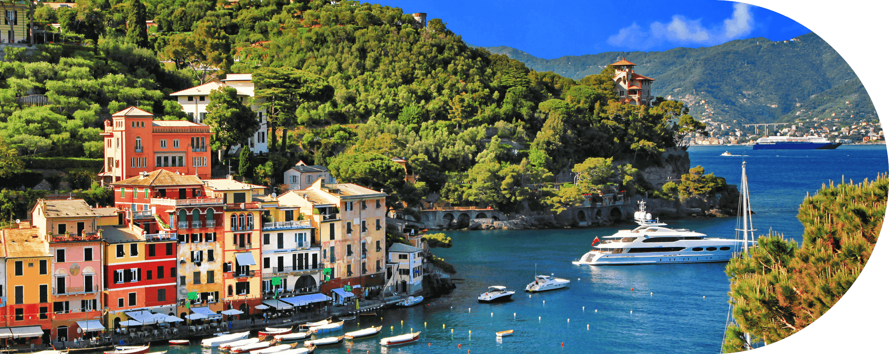
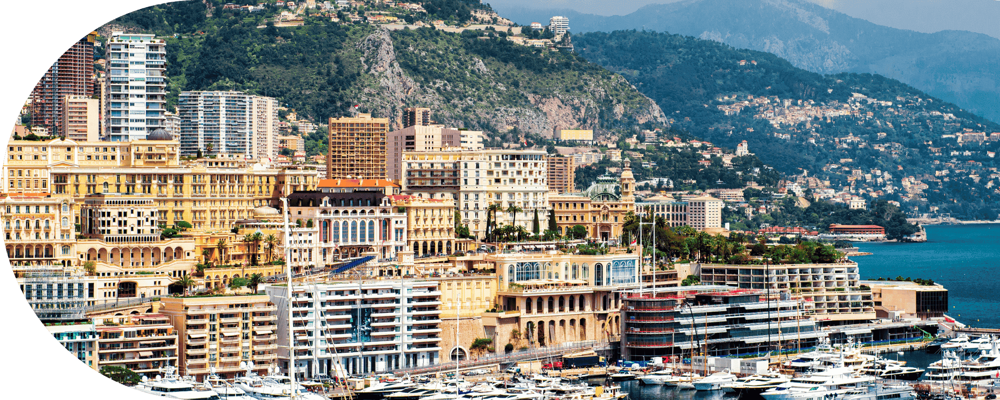
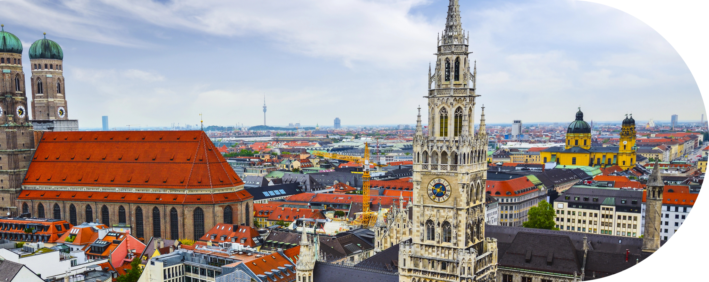
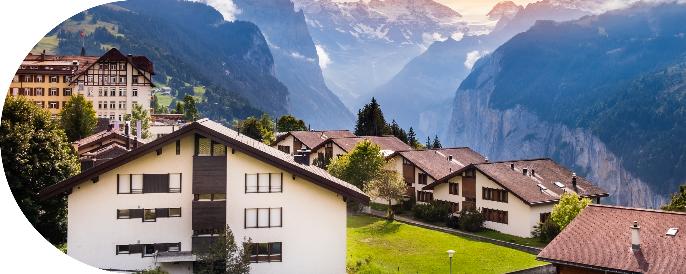
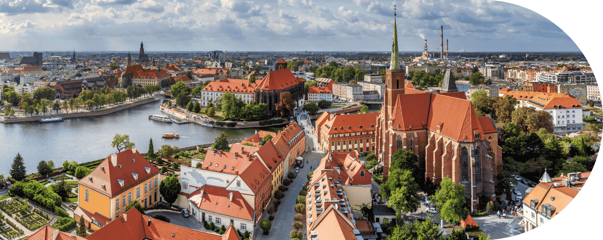
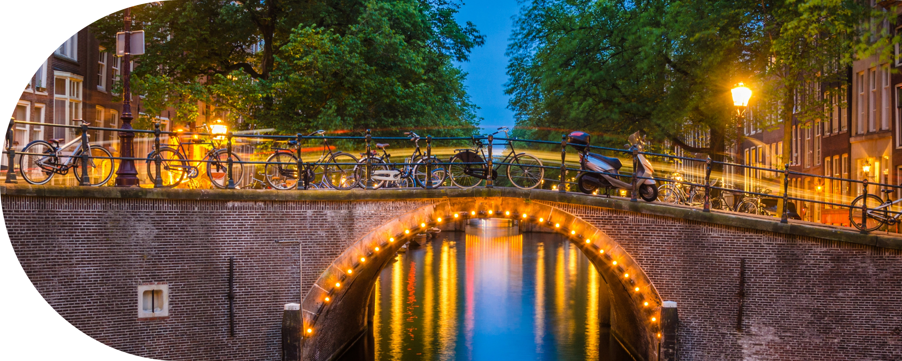

Гастрономия
Европейская кухня известна на весь мир. В каждом регионе вас ждут кулинарные открытия – от изысканных французских блюд до свежих морепродуктов Греции и Италии. Путешествуя по Европе, вы сможете попробовать все самые известные и вкусные национальные блюда.
Современные города
Помимо древних городов, Европа предлагает множество современных мегаполисов, таких как Лондон, Берлин и Барселона. Здесь вы найдете все – от модных бутиков и ресторанов высокой кухни до инновационных технологических центров.
ЕВРОПА
Европа предлагает разнообразие культур, истории и природных красот, что делает её идеальным направлением для путешествий.
Кzаждый уголок континента уникален – от средневековых замков и уютных деревень до современных мегаполисов, кипящие жизнью.
Культурное наследие и история
Европа славится своим богатым культурным наследием. Прогулки по улочкам Рима или Парижа перенесут вас в прошлое, а экскурсии по музеям и галереям позволят насладиться шедеврами мирового искусства.
Разнообразие природы
От заснеженных Альп до живописных пляжей Средиземноморья – Европа поражает своим природным разнообразием. Здесь можно кататься на лыжах зимой, отдыхать у моря летом, а осенью наслаждаться прогулками по виноградникам и национальным паркам
ИССЛЕДУЙТЕ СТРАНЫ
ЕВРОПЫ ВМЕСТЕ С НАМИ
Великобритания
Великобритания – страна с богатой историей, культурным наследием и невероятным разнообразием достопримечательностей. Здесь каждый найдет что-то для себя: от величественных дворцов и старинных замков до современных музеев и живописных ландшафтов. Прогулки по Лондону откроют вам символы страны, такие как Тауэрский мост, Биг Бен и Букингемский дворец, а уютные деревни в провинциях перенесут вас в атмосферу английской старины.

Франция
Франция – это страна, которая очаровывает своей богатой культурой и разнообразием. Париж, с его величественной архитектурой, известными музеями, такими как Лувр и Орсе, и романтическими улочками, считается одним из самых красивых городов мира. Но Франция – это не только столица. Каждая её область предлагает уникальные впечатления: виноградники Бордо, лазурное побережье Ниццы, средневековые замки долины Луары и альпийские курорты.

Испания
Испания – это страна ярких красок, богатых традиций и впечатляющего разнообразия. Каждый уголок Испании предлагает что-то особенное: от динамичной атмосферы Барселоны с её шедеврами Гауди до исторических улиц Мадрида, где сосредоточены одни из лучших музеев Европы. Для любителей пляжного отдыха Испания славится своими потрясающими курортами на побережьях Коста-Брава и Коста-дель-Соль, а также Канарскими и Балеарскими островами.

Италия
Италия – это страна, где история, искусство и природа сливаются в единое целое. Здесь вас ждут древние руины Рима, величественные соборы Милана и Флоренции, а также узкие каналы Венеции, которые дарят неповторимую атмосферу романтики. Каждая итальянская область имеет свою уникальную культуру и характер, будь то живописные виноградники Тосканы, солнечные побережья Амальфи или заснеженные вершины Альп.

Монако
Монако – это маленькое, но удивительно роскошное княжество на Лазурном берегу, которое очаровывает своими захватывающими видами и атмосферой. Город-государство славится своими фешенебельными курортами, яхтами и казино Монте-Карло, где можно ощутить истинный дух гламура. Несмотря на свои небольшие размеры, Монако предлагает множество интересных достопримечательностей, таких как Княжеский дворец, Океанографический музей и живописные сады.

Германия
Германия – это страна с богатым культурным наследием, разнообразными пейзажами и современными мегаполисами. В каждой ее части можно найти уникальные достопримечательности: от средневековых замков Баварии, до исторического Берлина с его Музейным островом. Мюнхен привлекает туристов не только своей архитектурой, но и всемирно известным праздником Октоберфест, а живописные долины Рейна — своими виноградниками и старинными городами.

Швейцария
Швейцария – это страна потрясающих природных пейзажей, высоких Альпийских вершин и кристально чистых озёр. Любители активного отдыха найдут здесь лучшие горнолыжные курорты, такие как Церматт и Санкт-Мориц, где можно насладиться первоклассными спусками и панорамными видами. Летом горы превращаются в идеальное место для пеших прогулок и альпинизма, а живописные деревни и города, такие как Люцерн и Интерлакен, предлагают умиротворение и комфорт.

Польша
Польша – это страна с богатой историей, уникальной культурой и разнообразными природными ландшафтами. Величественные города, такие как Краков, Варшава и Вроцлав, предлагают интересное сочетание старинной архитектуры и современной жизни. Краков, с его великолепным замком Вавель и средневековой Рыночной площадью, переносит в атмосферу прошлого, а Варшава удивляет своей восстановленной после войны архитектурой и современным ритмом жизни.

Нидерланды
Нидерланды – это страна живописных каналов, бесконечных полей тюльпанов и богатого культурного наследия. Амстердам, со своими узкими улочками, домами вдоль каналов и знаменитыми музеями, такими как Рейксмузеум и музей Ван Гога, предлагает погружение в искусство и историю. В Нидерландах вы также найдете традиционные ветряные мельницы и уютные деревушки, такие как Заансе Сханс, где можно узнать больше о национальных ремеслах и традициях.
